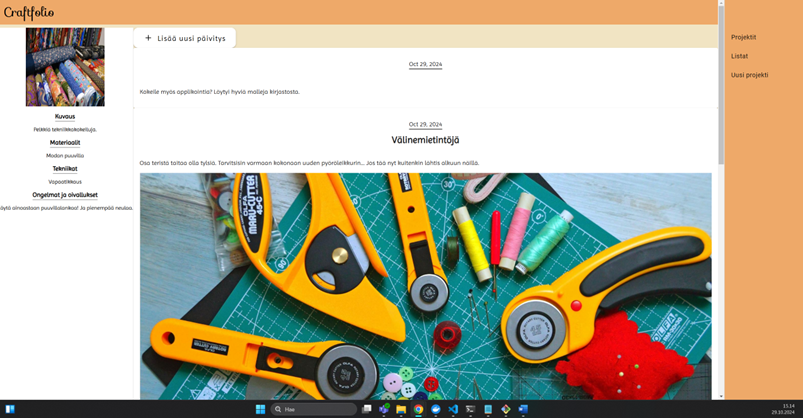
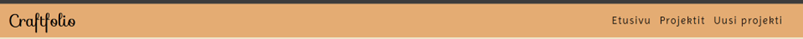
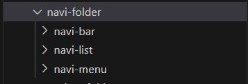
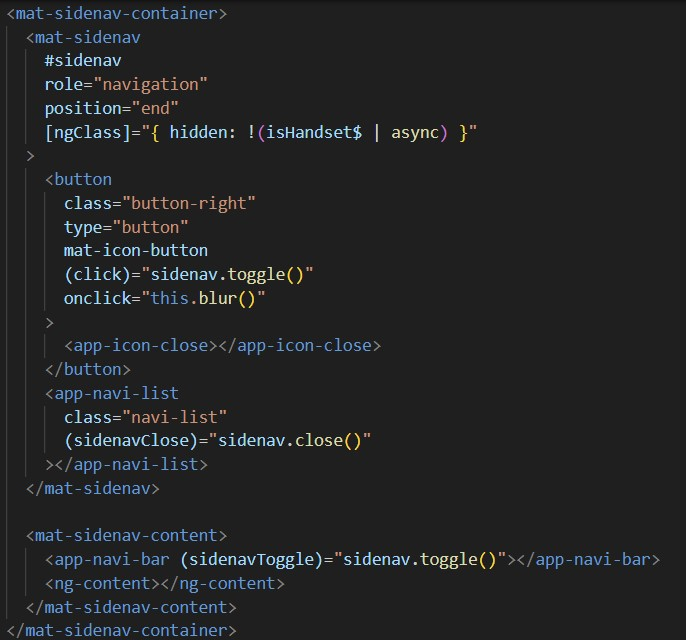
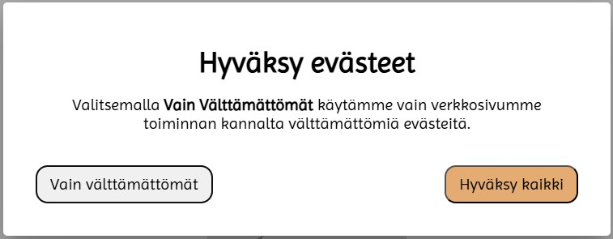
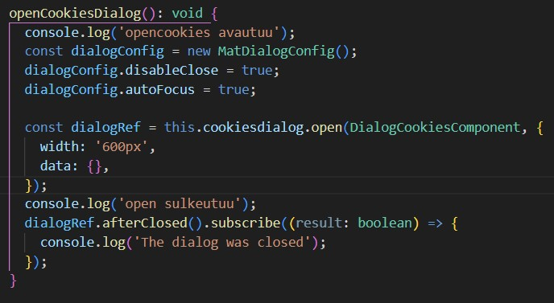
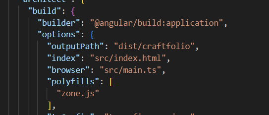
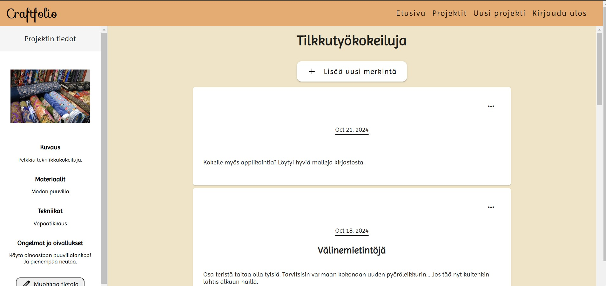
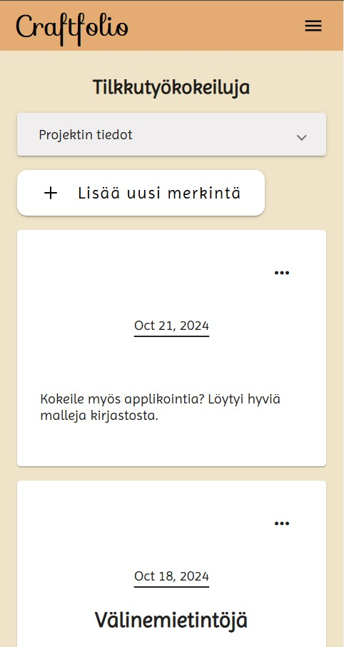
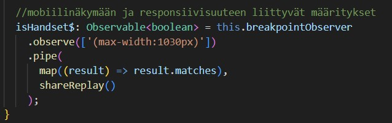

Pääroolinani oli frontend.
Angular materials komponentit
Käyttimme sovelluksessa Angular materials:in valmiita komponentteja, jotka helpottivat kehitystä paljon. Itse en näitä ollut aiemmin näitä käyttänyt, joten opin niistä ja niiden ominaisuuksista paljon TC:n aikana.
Navigaatio
Navigaatiota muutettiin usein. Oli hieman haastavaa löytää juuri sellaista tutoriaalia, joka olisi vastannut omaa suunnitelmaa. Haastetta loi myös ymmärtää Angular materials navigaation komponentin rakennetta (useita sisäkkäisiä komponentteja) sekä saada se sopimaan sovelluksen omaan komponenttirakenteeseen.
Ensimmäinen versio ison näytön navigaatiosta:
Viimeinen versio ison näytön navigaatiosta:
Navin komponentti rakenne:
Navi-menu html
Evästeikkuna
Dialogi ikkuna oli myös valmis Angular materials komponentti. Ulkoasultaan se oli helppo toteuttaa.
 Dialogi-ikkunan toimintalogiikka
PWA
Sovelluksen PWA versio toimii paikallisesti koneella, mutta AWS Elastic beanstlakissa olevaan versioon sitä ei saatu toimimaan. Sovelluksen muuttaminen PWA:ksi aiheutti ongelmia, yllättävien ja epäselvien virheilmoitusten vuoksi. Siksi sen siirtäminen pilveen venyi. Siirtäessä ilmeni ongelmia, joita ei ehditty selvittämään.
Lopulta selvisi, että ongelmat (virheilmoitukset) johtuivat väärästä builderista. Sen vaihtamisen jälkeen pwa lähti toimimaan.
Angular.json tiedostossa oli väärä builder. Sen vaihtamisen jälkeen PWA alkoi toimimaan.

PWA-versio lokaalina
Responsiivisuus
Hioin paljon sovelluksen responsiivisuutta projektin aikana. Isossa osassa Angular materials komponentit olivat jo valmiiksi responsiivisia mutta sovelluksessa oli muutama näkymä jotka olivat hyvin erilaiset eri näytöillä. Niiden hiominen vei aikaa.
Ison näytön projektinäkymä
Pienen näytön projektinäkymä
Projektinäkymän breakpointin määrittely
Mitä opin:
Erilaisia tapoja määrittää responsiivisuus
Standalone sovelluksen ero modulaariseen (reititys yms.)
Angular Materials
NgOptimizedImage
Angular custom theme
Google icons/fonts